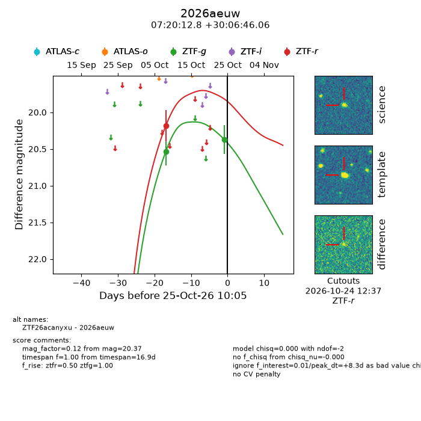
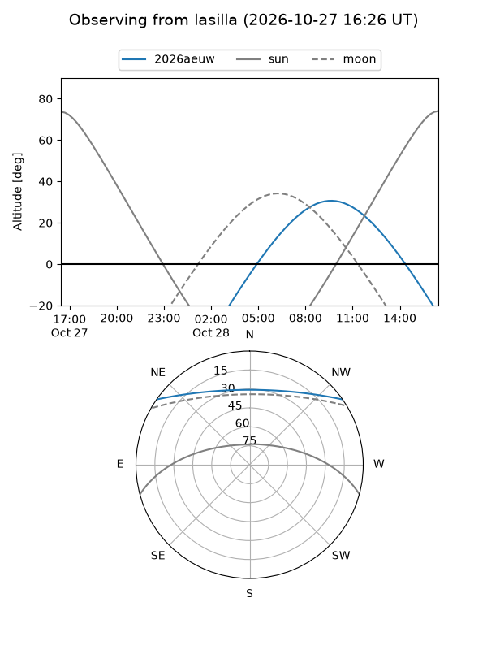
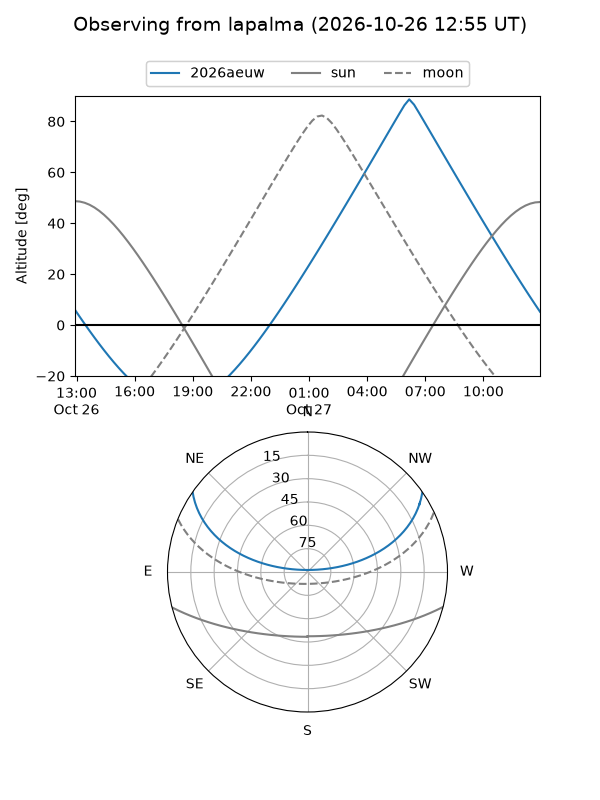
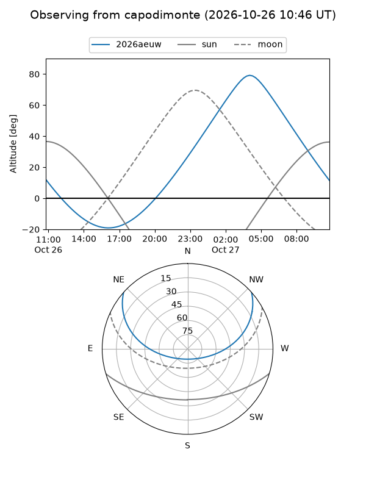
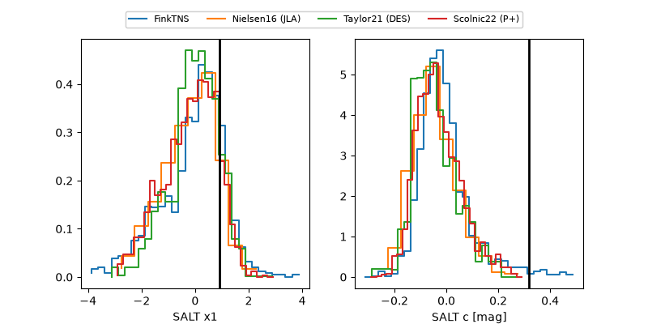

2026aeuw
Target 2026aeuw at 2026-10-25 10:07
Aliases and brokers:
FINK-ZTF: ztf.fink-portal.org/ZTF26acanyxu
Lasair-ZTF: lasair-ztf.lsst.ac.uk/objects/ZTF26acanyxu
ALeRCE-ZTF: alerce.online/object/ZTF26acanyxu
YSE-PZ: ziggy.ucolick.org/yse/transient_detail/2026aeuw
TNS name: wis-tns.org/object/2026aeuw
Direct TNS query: direct search
alt names
ZTF26acanyxu (ztf,fink_ztf)
2026aeuw (tns,yse)
Coordinates:
equatorial (ra, dec) = 110.0534,+30.11280
equatorial (HMS+DMS) = 07:20:12.81,+30:06:46.06
galactic (l, b) = (188.1013,+18.97637)
Flags:
peak dt: +8.3
Photometry:
last ztfg=20.37, ztfr=20.18
2 ztfg, 1 ztfr detections
Lightcurve

Visibility



Additional plots
